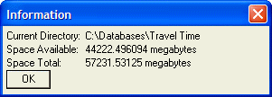

Dynamic Text
If you want to display text that is stored in a variable on a dialog box, you can use the {text=string} command to create a dynamic text object on the dialog. Since the size of the dynamic text may change, you must specify a size for the text object.
Sizes for most objects on Xdialogs are represented by a columns parameter and an optional rows parameter.
For example, the command {text=40string1} creates text on the dialog 40 characters wide. In this case the optional rows parameter has been omitted. The text object is therefore one row high. The text object will display the value in the string1 variable.
The command {text=40,3string2} creates a text object that is 40 characters wide and 3 rows high.
For example, the following dialog box displays the values of two variables that are calculated as Part of an Xbasic script:
curdir = file.dir_get() spaceavail = file.drive_space_avail( left(file.dir_get(),1) )/(1024*1024)+" megabytes" spacetotal = file.drive_space_total( left(file.dir_get(),1) )/(1024*1024)+" megabytes" ui_dlg_box("Information",<<%dlg% Current Directory: |{text=40curdir}; Space Available: |{text=40spaceavail}; Space Total:|{text=40spacetotal}; <&OK> %dlg%) |
This script produces the following dialog box.

Lesson 1: Dynamic Text
Note the '|' character in the script. This is a special character that works much like a tab character in a word processor. It tells the dialog box to start the text to the right of the '|' character in the next "column" of the dialog box.
This is a key concept of Xdialog. Xdialog is "row" and "column" oriented (much like HTML pages are). The objects on the dialog are created starting at the top left, from left to right, then from row to row.
Xdialog automatically spaces out the objects on the dialog so that the dialog is well proportioned.
In the above example, the '|" character is used in front of each of the dynamic text objects, causing these objects to all line up vertically in the second column of the dialog.
Next
Limitations
Desktop applications only.